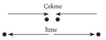

Bilimsel araştırma sonuçları, bilimin kendi sınırlı alanının çok ötelerine taşan problemlerle ilgili felsefi görüşte sık sık bir değişmeyi gerektirir. Bilimin ereği nedir? Doğayı betimlemeye çalışan bir teoriden istenen nedir? Bu sorular, fiziğin sınırlarını aşmakla birlikte, fizikle sıkı sıkıya ilişkilidir. Çünkü bilim, onların doğduğu gereçlere (malzemeye) biçim verir. Felsefi genellemeler, bilimsel sonuçlara dayandırılmalıdır. Bununla birlikte, bir kez biçimlenip çoğunlukla benimsenen felsefi genellemeler, doğa olaylarını ele almanın düşünülebilen yollarından birini göstererek, bilimsel düşüncenin daha sonraki gelişimini sık sık etkiler. Başat görüşe başarı ile başkaldırmak, yeni felsefi görüşlerin bir kaynağı durumuna gelerek, umulmadık ve bambaşka gelişimlere yol açar. Bu söylenenler, fizik tarihinden aktarılmış örneklerle kanıtlanmadıkları sürece, elbette belirsiz ve anlamsız görünür.
Burada, bilimin ereği konusundaki ilk felsefi düşünceleri anlatmaya çalışacağız. Bu düşünceler, aşağı yukarı yüz yıl öncesine dek, fiziğin gelişimini büyük ölçüde etkiledi. Ama sonra yeni kanıtlar, yeni olgular ve teoriler, bu düşüncelerin bırakılmasını gerektirdi ve bu kez de onlar, bilim için yeni bir taban oluşturdu.
Bütün bilim tarihinde, Yunan felsefesinden modern fiziğe dek doğal görüngülerin görünür karmaşıklığını birkaç basit temel düşünceye ve ilişkiye (relation) indirgeme çabaları, hiç eksik olmamıştır. Bu, bütün doğal felsefenin dayandığı ilkedir; atomcuların yapıtlarında bile anlatılmıştır. Demokritos, yirmi üç yüzyıl önce şöyle yazmıştı:
“Göreneğe göre, tatlı tatlıdır; acı acıdır; sıcak sıcaktır; soğuk soğuktur; renk renktir. Oysa gerçeklikte atomlar ve boş uzay vardır. Yani duyularımızla algıladığımız nesneler gerçek sanılmaktadır ve onlar gerçek sayılmaya alışılmıştır, ama onların gerçekliği yoktur. Yalnız atomlar ve boş uzay gerçektir.”
Bu düşünce, eski felsefede, hayal gücünün zekice bir buluşu olarak kaldı. Yunanlılar, birbirini izleyen olayların ilişkisini belirleyen doğa yasalarını bilmiyorlardı. Teoriye ve deneye dayanan bilim, gerçekte Galilei ile başladı. Hareket yasalarına varan ilk ipuçlarını izledik. İki yüzyıllık bilimsel araştırma boyunca, kuvvet ile madde, doğayı anlamak için gösterilen bütün çabaların dayandığı kavramlardı. Bunlardan biri olmadan öbürünü düşünmek olanaksızdır; çünkü madde, başka bir maddeyi etkilerken, bir kuvvet kaynağı olarak belirir.
En basit durumu alalım: İki tanecik (particle) ve onlar arasında etki gösteren kuvvetler var. En kolay düşünülebilen kuvvetler, itme ve çekme kuvvetleridir. Her iki durumda da, kuvvet vektörleri maddesel noktaları birleştiren bir çizgi üzerinde bulunur. Örneğimizin basit olmasını istediğimiz için, birbirini çeken ya da iten tanecikler düşünebiliriz. [Şekil-21]

[Şekil-21]
Etkili kuvvetlerin yönü ile ilgili herhangi bir başka varsayımı çok daha karmaşık bir biçimde belirtmek gerekir. Kuvvet vektörlerinin uzunluğu konusunda aynı ölçüde basit bir varsayımda bulunabilir miyiz? Aşırı özel varsayımlardan kaçınmak istesek bile, söyleyebileceğimiz tek şey gene de şudur: Belirli herhangi iki tanecik arasındaki kuvvet, gravitational kuvvetler gibi, yalnız onlar arasındaki uzaklığa bağlıdır. Bu, yeterince basit görünmektedir. Yalnız iki tanecik arasındaki uzaklığa değil, onların hızlarına da bağlı olan kuvvetler gibi, çok daha karmaşık kuvvetler düşünülebilirdi. Temel kavramlarımız madde ve kuvvet ise, tanecikleri birleştiren çizgi boyunca etki gösteren ve yalnız onlar arasındaki uzaklığa bağlı olan kuvvetlerden daha basit varsayımlar düşünebilmemiz güçtür. Peki ama, bütün fiziksel görüngüler yalnız bu çeşit kuvvetlerle tanımlanabilir mi? Mekaniğin bütün dallarındaki büyük başarılar, mekaniğin gökbilimin gelişmesindeki şaşırtıcı başarısı, görünüşte farklı ve karakterleri bakımından mekanik olmayan problemlere mekanik düşüncelerin uygulanması, bütün bunlar, şu inancı desteklemektedir: Bütün doğal görüngüler değişmeyen nesneler arasındaki basit kuvvetlerle tanımlanabilir. Galilei’den sonraki iki yüzyıl boyunca, böyle bir çaba, bilinçli ya da bilinçsiz olarak, aşağı yukarı bütün bilimsel çalışmalarda gösterilmiştir. Helmholtz, 19. yüzyılın ortalarında, bunu açıkça formülleştirmiştir:
“Bundan dolayı, maddenin fiziksel biliminin problemi şudur: Doğal görüngüler, yeğinlikleri tümüyle uzaklığa bağlı olan ve değişmeyen çekici ve itici kuvvetlere yorulmalıdır. Bu problemin tam çözümü, doğanın eksiksiz anlaşılabilmesinin gereğidir.”
Böylece, Helmholtz’a göre, bilimin gelişim doğrultusu belirlenmiştir ve hiç sapmadan kesin bir yol izler:
“Ve doğal görüngülerin basit kuvvetlere indirgenmesi biter bitmez ve görüngülerin ancak onlara indirgenebileceği kanıtlanır kanıtlanmaz, bilimin de işi bitecektir.”
Bu görüş, 20. yüzyıl fizikçisi için, geçersiz ve böncedir. O büyük araştırma serüveninin çabucak bitebileceğini ve evrenin coşku verici olmamakla birlikte, yanılmaz olan bir tanımının her zaman geçerli olmak üzere saptanabileceğini düşünmek, 20. yüzyıl fizikçisini ürkütürdü.
Bu öğretilerle, bütün olayların tanımının basit kuvvetlere indirgenebileceği düşünülüyordu, ama kuvvetlerin uzaklığa neden bağlı olmak gerektiği sorusuna hiç dokunulmuyordu. Bu bağlılık, farklı olaylar için farklı olabilir. Felsefi bakımdan, farklı olaylar için farklı birçok kuvvet çeşitleri gösterme zorunluluğu, elbette kıvandırıcı değildir. Bununla birlikte, en açık olarak Helmholtz’un formülleştirdiği bu mekanikçi denen görüş, o çağda önemli bir rol oynadı. Maddenin kinetik teorisi, doğrudan doğruya mekanikçi görüşün etkisi ile sağlanmış en büyük başarılardan biridir.
Bu görüşün değerden düşmesini görmeden önce, 19. yüzyıl fizikçilerinin görüş açılarını geçici olarak kabul edelim ve onların dış alem tanımlarından hangi sonuçları çıkarabileceğimizi görelim.